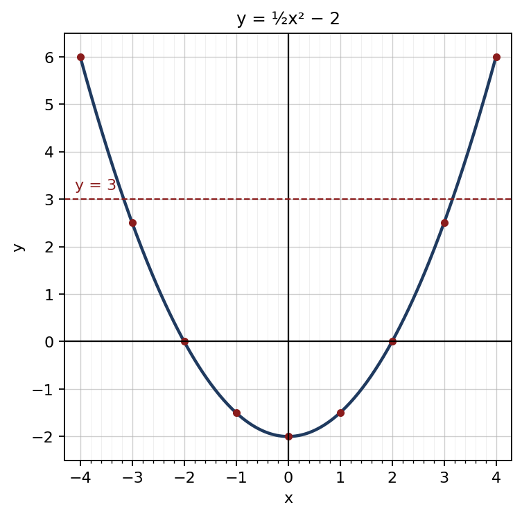

1. √0.0196 = √19610000 = 14100
අවසාන පිළිතුර: 0.14
(ලකුණු 2)2. 52 − 43 = 76 ; 76 ÷ 72 = 76 × 27
අවසාන පිළිතුර: 13
(ලකුණු 2)3. (x2 − 25) − (x2 − 4x + 4)
අවසාන පිළිතුර: 4x − 29
(ලකුණු 2)4. ගුණිතය 28, එකතුව −11 ⇒ −4, −7
අවසාන පිළිතුර: (x − 4)(x − 7)
(ලකුණු 2)5. 3a(a2 − 4)
අවසාන පිළිතුර: 3a(a − 2)(a + 2)
(ලකුණු 2)6. x(x − 4)(x − 4)(x + 4)
අවසාන පිළිතුර: xx + 4
(ලකුණු 2)7. චාප දිග = 45360 × 2 × 227 × 14 = 11 cm ; පරිමිතිය = 11 + 14 + 14
අවසාන පිළිතුර: 39 cm
(ලකුණු 2)8. QP̂R = x ⇒ PQ̂R = PR̂Q = 2x ; x + 2x + 2x = 180°
අවසාන පිළිතුර: 36°
(ලකුණු 2)9. log2 4x = 5 ⇒ 4x = 25 = 32
අවසාන පිළිතුර: x = 8
(ලකුණු 2)10. lg 0.03 = lg 3 − lg 100 = 0.4771 − 2
අවසාන පිළිතුර: 2.4771
(ලකුණු 2)11. Tn = 40 − 3(n − 1) < 0 ⇒ n − 1 > 13.3 ⇒ n = 15 (T14 = 1, T15 = −2)
අවසාන පිළිතුර: 15 වන පදය
(ලකුණු 2)12. B ⊂ A ⇒ A ∩ B = B, A ∪ B = A
අවසාන පිළිතුර: n(A ∩ B) = 12 ; n(A ∪ B) = 20
(ලකුණු 2)13. 20 000 × 1.05 = 21 000 ; 21 000 × 1.05 = 22 050 ; 22 050 − 20 000
අවසාන පිළිතුර: රු. 2 050
(ලකුණු 2)14. මිනිස් පැය = 10 × 8 × 12 = 960 ; 960 ÷ (12 × 10)
අවසාන පිළිතුර: දින 8
(ලකුණු 2)15. 72 km/h = 72 × 10003600 = 20 m/s ; 200 ÷ 20
අවසාන පිළිතුර: තත්පර 10
(ලකුණු 2)16. y(x − 1) = 2x + 3 ⇒ xy − 2x = y + 3 ⇒ x(y − 2) = y + 3
අවසාන පිළිතුර: x = y + 3y − 2
(ලකුණු 2)17. සුදු නොවන බෝල = 3 + 2 = 5 ; 510
අවසාන පිළිතුර: 12
(ලකුණු 2)18. 3 + 7 + x + 10 + 12 = 5 × 8 = 40 ⇒ 32 + x = 40
අවසාන පිළිතුර: x = 8
(ලකුණු 2)19. BÂD = 180° − (35° + 60°) = 85° ; BĈD = BÂD (සම්මුඛ කෝණ)
අවසාන පිළිතුර: 85°
(ලකුණු 2)20. 2 × 227 × 7 × h = 440 ⇒ 44h = 440
අවසාන පිළිතුර: 10 cm
(ලකුණු 2)| (a) | |
| x2 − x − 6 = (x − 3)(x + 2) ; පොදු හරය (x − 3)(x + 2) | 1 |
| 3 + (x − 3)(x − 3)(x + 2) | 1 |
| = x(x − 3)(x + 2) | 1 |
| (b) | |
| 2p + 3b = 410 ......① | 1 |
| 3p + 2b = 340 ......② | 1 |
| ① + ②: p + b = 150 ; ① − ②: b − p = 70 | 1 |
| b = 110, p = 40 ⇒ පෑනක් රු. 40, පොතක් රු. 110 | 1 |
| (c) | |
| x2 + x − 6 = 14 ⇒ x2 + x − 20 = 0 | 1 |
| (x + 5)(x − 4) = 0 | 1 |
| x = 4 හෝ x = −5 | 1 |
මුළු ලකුණු: 10
| (a) | |
| x = −3 ⇒ y = 2.5 ; x = 1 ⇒ y = −1.5 | 1 |
| (b) | |
| නිවැරදි පරිමාණය සහ අක්ෂ | 1 |
| ලක්ෂ්ය 9 නිවැරදිව ලකුණු කිරීම | 1 |
| සුමට වක්රය | 1 |
 | |
| (c) | |
| (i) අවම අගය −2 ; හැරුම් ලක්ෂ්යය (0, −2) | 1 |
| (ii) x = −2 හෝ x = 2 | 1 |
| (iii) y = 3 රේඛාව ඇඳීම | 1 |
| x ≈ −3.2 හෝ x ≈ 3.2 (±3.1 – ±3.2 පිළිගන්න) | 1 |
| (iv) −3 ≤ x ≤ 3 | 1 |
| (d) | |
| y = 12x2 | 1 |
මුළු ලකුණු: 10
| (a) | |
| 90360 × 227 × 14 × 14 | 1 |
| = 154 m² | 1 |
| (b) | |
| සෘජුකෝණාස්රය = 28 × 14 = 392 m² | 1 |
| අඳුරු කොටස = 392 − 2 × 154 = 84 m² | 1 |
| (c) | |
| එක් චාපයක දිග = 90360 × 2 × 227 × 14 | 1 |
| = 22 m | 1 |
| පරිමිතිය = DC + චාප දෙක = 28 + 22 + 22 = 72 m | 1 |
| (d) | |
| තණකොළ: 308 × 200 = රු. 61 600 | 1 |
| ගල් අතුරුම: 84 × 1 000 = රු. 84 000 | 1 |
| මුළු වියදම = රු. 145 600 | 1 |
මුළු ලකුණු: 10
| (a) | |
| DÂE = EÂB (AE කෝණ සමච්ඡේදකය) | 1 |
| EÂB = AÊD (AB ∥ DC, ඒකාන්තර කෝණ) | 1 |
| ∴ DÂE = AÊD ⇒ AD = DE ; ADE සමද්විපාද ත්රිකෝණයකි | 1 |
| (b) | |
| DE = AD = 7 cm ; DC = AB = 12 cm | 1 |
| EC = 12 − 7 = 5 cm | 1 |
| (c) | |
| DÂB + AB̂C = 180° (බද්ධ කෝණ, AD ∥ BC) | 1 |
| ½ DÂB + ½ AB̂C = 90° ⇒ AE හා BF අතර ත්රිකෝණයේ කෝණ දෙකේ එකතුව 90° | 1 |
| ඉතිරි කෝණය = 180° − 90° = 90° ⇒ AE ⊥ BF | 1 |
| (d) | |
| එලෙසම BCF සමද්විපාද ⇒ CF = BC = 7 cm ⇒ DF = 12 − 7 = 5 cm | 1 |
| EF = DE − DF = 7 − 5 = 2 cm | 1 |
මුළු ලකුණු: 10
| (a) | |
| වට්ටම = 120 000 × 12100 = රු. 14 400 | 1 |
| ගෙවිය යුතු මුදල = රු. 105 600 | 1 |
| (b) | |
| මූලික ගෙවීම = රු. 30 000 ; වාරික = 12 × 8 500 = රු. 102 000 | 1 |
| මුළු ගෙවීම = රු. 132 000 ⇒ වැඩිපුර = රු. 12 000 | 1 |
| 12 000120 000 × 100 = 10% | 1 |
| (c) | |
| ලාභය = 105 600 − 88 000 = රු. 17 600 | 1 |
| 17 60088 000 × 100 = 20% | 1 |
| (d) | |
| අවශ්ය විකුණුම් මිල = 88 000 × 125100 = රු. 110 000 | 1 |
| ලකුණු කළ මිල M ⇒ 0.88M = 110 000 | 1 |
| M = රු. 125 000 | 1 |
මුළු ලකුණු: 10
| (a) | |
| 16 + 14 | 1 |
| = 512 | 1 |
| (b) | |
| කාලය = 125 පැය | 1 |
| = පැය 2 මිනිත්තු 24 | 1 |
| (c) | |
| 16 + 14 − 112 | 1 |
| = 412 = 13 | 1 |
| කාලය = පැය 3 | 1 |
| (d) | |
| පැය 1 කින් පිරුණු කොටස = 512 ⇒ ඉතිරි = 712 | 1 |
| A හා C එකට (පැයකට) = 16 − 112 = 112 | 1 |
| කාලය = 712 ÷ 112 = පැය 7 | 1 |
මුළු ලකුණු: 10